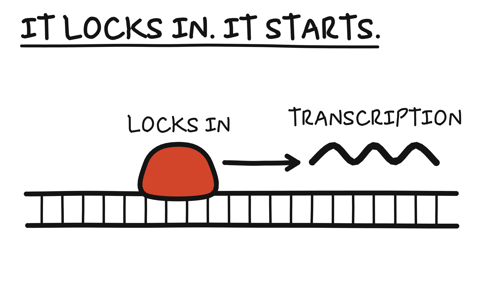
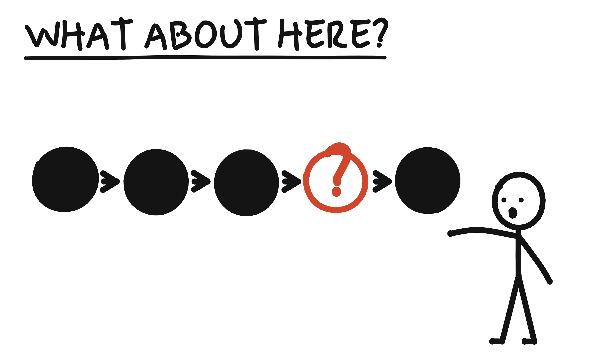
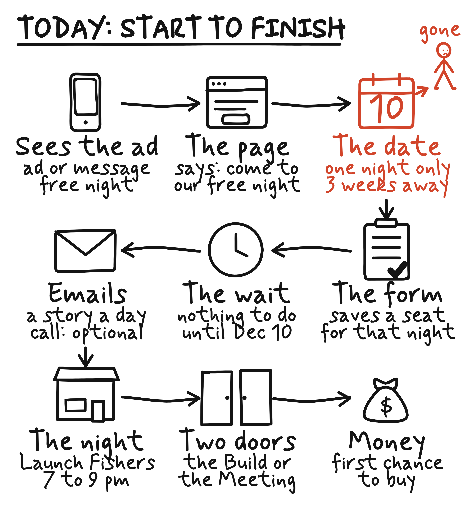
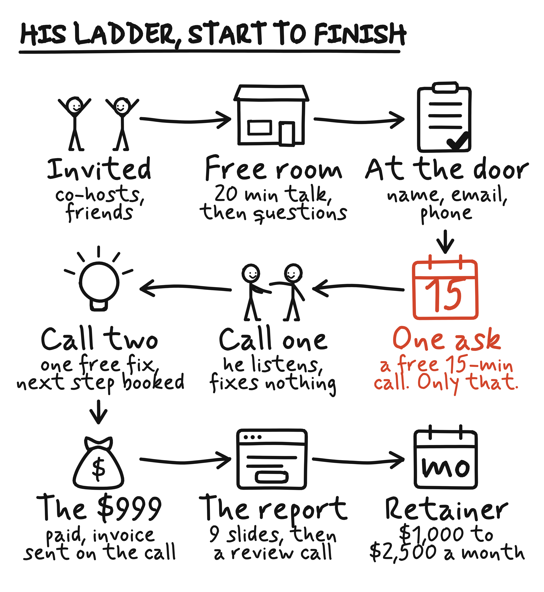
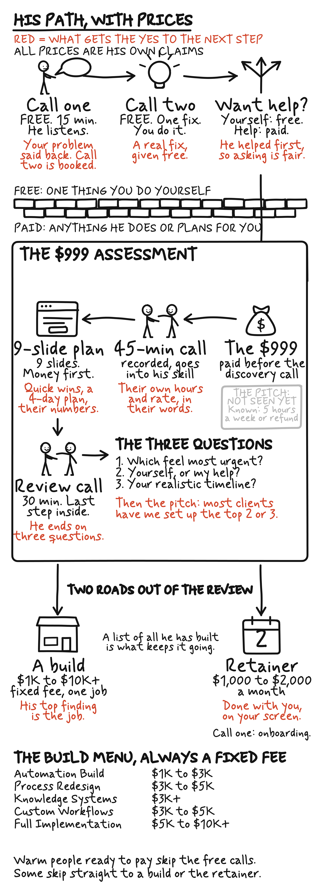
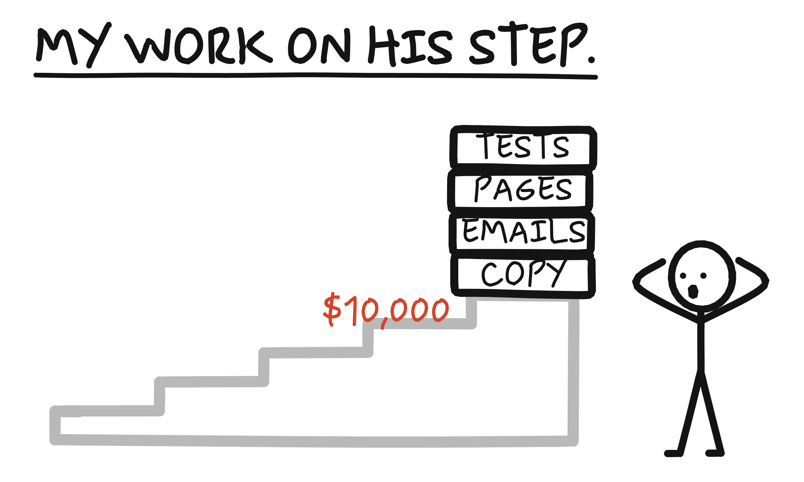
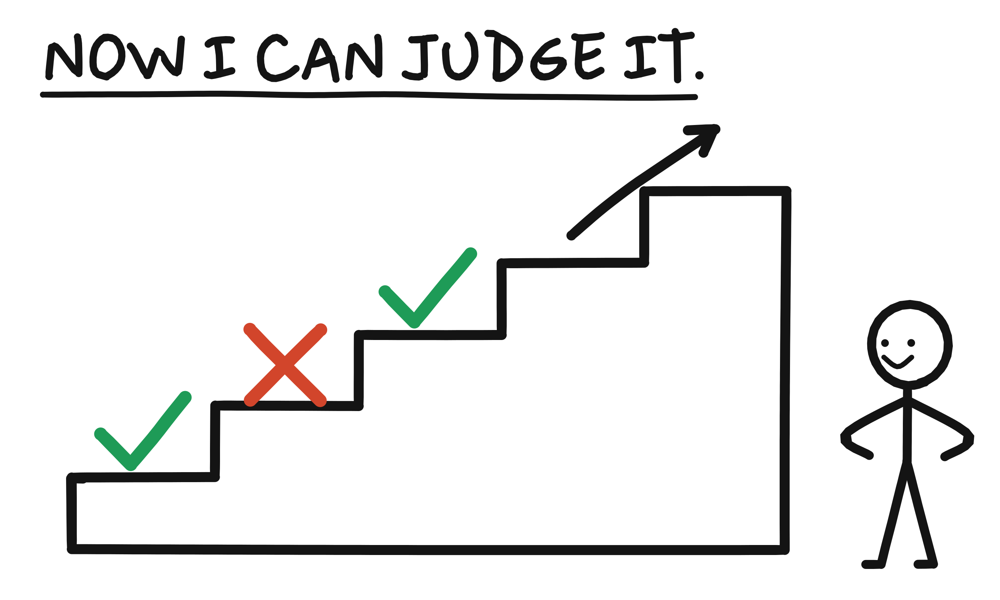

Draft v4, November 17, 2026. For Daegan to read and mark up. Not linked from anywhere, not for sharing yet.
You've read about it.
Maybe you've asked Claude about it.
You could pass a quiz on it tomorrow.
But if someone asked how it actually works, step by step, what leads to what...
Or whether it's any good...
You'd stall.
I've been there.
I found the way out a long time ago, at Duke.
I took microbiology at Duke.
Most of it was what happens inside a cell.
Gene transcription.
Little things happening in an order.
A little thing locks into a spot on the DNA, and that starts transcription.
Read that in a textbook, and it's a pile of words.
Draw it, and it just makes sense.

So I drew my notes.
Then I drew them again.
And again.
Organic chemistry was my favorite class, for the same reason.
How one thing connects to the next is how I think.
When I drew it rigorously, every so often I'd hit a spot where I couldn't draw the next step.
Something was supposed to happen there.
I didn't know what.
So I'd take the drawing to office hours, point at the spot, and say:
"Well, look. What about here?"
More often than not, it wasn't me.
It was something the professor hadn't covered.
My notes weren't wrong.
The drawing had shown me the true shape of what I'd been given, including the part that wasn't there.
It doesn't always go that way.
Sometimes the gap is you.
Sometimes it's the source.
Sometimes something got lost in translation, or you flat out misunderstood.
The drawing doesn't tell you which.
It tells you WHERE.
It shows you the weak link in the chain of your whole understanding.
Then you go ask, right there.

Years later, I sat in a Barnes & Noble with Dan Roam's book, The Back of the Napkin, trying to figure out how to teach my first seminar.
I built my first key of symbols.
A light bulb means this.
An exclamation point means that.
I meant it for teaching.
I ended up learning better myself.
That's when the study habit became a real tool.
I've used it ever since.
This time, I used it with Claude.
My partner Jimmy and I help local business owners put AI to work.
Jimmy follows a consultant who does the same thing.
He wanted me to get into how this guy does it.
I started with nothing.
So I gave Claude what we had: Jimmy's notes on him, and our own process.
(Claude can draw. Simple boxes and arrows, like a napkin sketch.)
First, I had it draw how WE do it.
Our shape. The one I already know.

The real drawing: how we did it, start to finish.
Then I asked questions about his, one at a time.
Then:
"Draw me the shape of what he's doing."

The real drawing: the first shape of his business.
It came back as a ladder of steps an owner climbs.
A free 15-minute call.
A second free call.
A paid assessment.
Then building things for the owner.
Then a monthly plan.
I looked at it and started talking it through.
He does this.
Then this.
Then what happens here?
And I got to the end of the second call.
"I clearly don't know what's happening here."
That's the call where a free conversation turns into a paid assessment.
Every dollar after it depends on that yes.
And I had nothing to put there.
So I did what I did at Duke.
I asked.
Again and again, until we hit the edge of what the notes could tell us, and what simply wasn't there.
Nobody had written down what he says on that call.
So that part of my drawing stays gray.
And now I know exactly what to go find out.

The real drawing, a few rounds later. See the gray box: "The pitch: not seen yet."
There was one more wall.
He sells builds, done-for-you AI work, in tiers from about $1,000 to $10,000 and up.
I couldn't see into them.
A name and a price don't tell you what's inside.
So I asked Claude: if these were things I'd created in our business, what would they look like?
It came back with Jimmy's work.
Not mine.
How the hell would I know what Jimmy never told me he did?
"No. What I did."
Then it came back with my own work sitting on his ladder.
And I got a sense.
Some of it didn't line up.
I laid his top tier, $10,000 and up, over everything I've built for our business.
The copy. The emails. The skills that write the emails. The pages. The split tests.
Ten thousand seemed like not enough for as much as I put in.
But now I had a gauge I could touch.
Not his labels.
My own work, held up against his prices.

I know marketing.
But I couldn't use any of it on his business while it was a pile of notes.
Once I could see the shape, how one thing leads to the next and on what terms, I could look at it with a critical eye.
The structure's good.
This doesn't need to be here.
That could be better over there.

You can't judge a thing you can't see.
I won't remember every tier he sells.
I saved those to look back on.
But the shape?
I'm not going to forget it.
Not because it was complex.
Because I examined it.
We drew it.
I know where it still doesn't make sense for me.
And I'm looking forward to building our own process right on top of it.
You don't own what you remember.
You own what you can see.
Draw the shape.
The spot that won't make sense is the weak link.
Go ask, right there.
Pick one thing you want to own.
A process. Someone's business. Something at work you nod along to and couldn't explain.
Give Claude what you have on it.
Have it draw what you already know first: "Draw the shape of how I do this now."
Then theirs: "Draw me the shape of what they're doing." Talk it through, step by step.
Where it won't make sense, stop and ask right there. Keep asking until it closes or you find it isn't in the source. Leave that part gray.
Lay it over yours. Ask what their pieces would look like in your world. When Claude hands you someone else's example, say: "No. Mine."
Then judge it. What stays. What goes. What could be better.
Mine was the end of the second call.
What's yours?